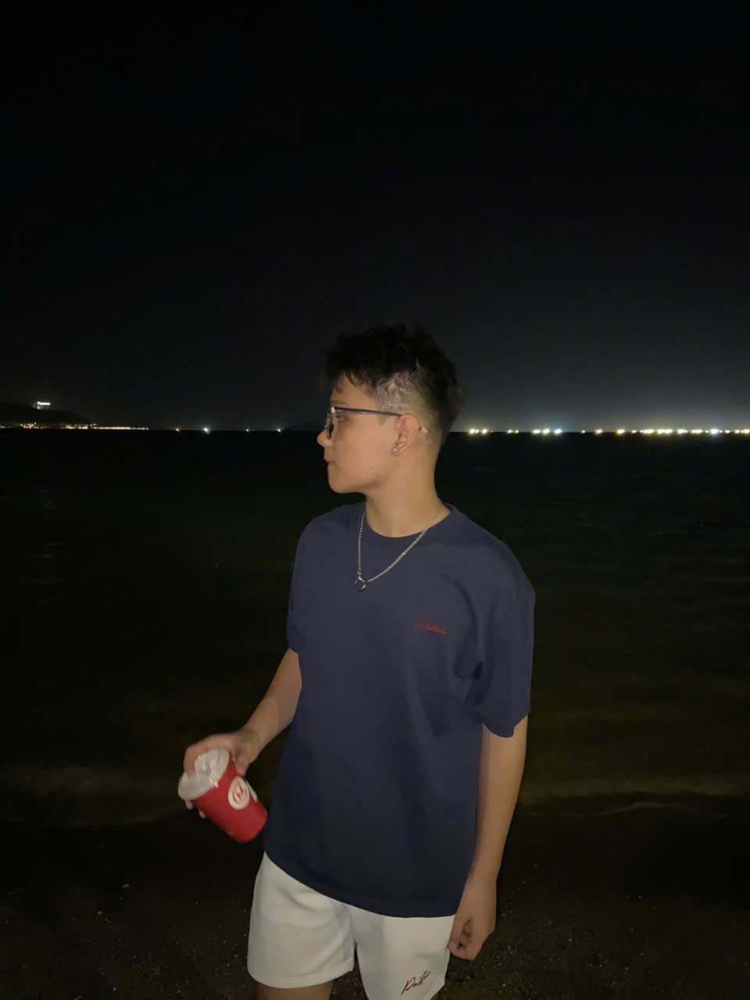

Bùi Đức Minh
Từ sự bền bỉ trên sân tập thể thao đến sự nhạy bén trong từng giai điệu âm nhạc, mình mang tinh thần nhiệt huyết đó vào ngành Kinh tế Quốc tế. Mục tiêu của mình là trở thành một Chuyên gia Phân tích Thương mại Toàn cầu hoặc Giám đốc Chuỗi cung ứng (Supply Chain Manager).
Mình tin rằng tư duy chiến lược linh hoạt, kết hợp cùng sức mạnh bứt phá của công nghệ số và trí tuệ nhân tạo (AI) sẽ là lợi thế cạnh tranh tuyệt đối giúp mình giải quyết các bài toán phức tạp và chinh phục những tập đoàn đa quốc gia. Portfolio này chính là không gian lưu trữ và minh chứng rõ nét nhất cho những kỹ năng số hóa mà mình đã làm chủ.

💡 Hộp Trí Thức Năng Lực Số
Học phần đã giúp tôi chuyển đổi hoàn toàn tư duy từ thao tác công nghệ thụ động sang chủ động điều phối công cụ số:
- Quản lý dữ liệu khoa học: Làm chủ cách tổ chức cây thư mục, tối ưu hóa thời gian trích xuất tài liệu.
- Thẩm định thông tin học thuật: Sử dụng toán tử nâng cao, kết hợp mô hình CRAAP đánh giá độ tin cậy.
- Kỹ nghệ Prompt Engineering: Áp dụng khung câu lệnh tiêu chuẩn ép AI có trọng tâm tư duy, bẻ gãy ảo giác thông tin.
- Điều phối dự án nhóm: Vận hành linh hoạt luồng tiến độ Agile/Kanban trên Trello, nâng cao hiệu suất cộng tác.
📊 Khung Kỹ Năng Đang Phát Triển
Hành trình Thực chiến
Tổng hợp các bài tập và dự án thực tế đã triển khai.
Bài 1: Máy tính & Thiết bị ngoại vi
Làm chủ hệ thống tệp tin, tổ chức không gian lưu trữ cá nhân khoa học bằng các phím tắt Windows thần tốc.
Xem quy trìnhBài 2: Khai thác dữ liệu học thuật
Nghiên cứu ứng dụng công nghệ sinh học trong bảo quản thực phẩm. Lọc tìm và đánh giá dữ liệu chuẩn CRAAP.
Xem quy trìnhBài 3: Tổng quan về AI
Trở thành "Kỹ sư Prompt". Xây dựng bộ câu lệnh 3 cấp độ để AI phân tích lợi ích dinh dưỡng chuyên sâu.
Xem quy trìnhBài 4: Hợp tác môi trường số
Vai trò Trưởng nhóm. Vận hành dự án "Lịch sử xã hội loài người" trơn tru trên nền tảng Trello, Docs và Teams.
Xem quy trìnhBài 5: Sáng tạo nội dung số
Sử dụng sức mạnh đa công cụ (ChatGPT, DALL-E, Canva) thiết kế Infographic thị trường lao động tương lai.
Xem quy trìnhBài 6: Liêm chính học thuật
Nhận diện ranh giới vi phạm đạo đức số. Đề xuất 6 nguyên tắc cốt lõi khi ứng dụng AI vào nghiên cứu đại học.
Xem quy trìnhMinh chứng Bài học
Tài nguyên và báo cáo PDF đính kèm gốc.
Trang Tổng Kết
Những giá trị cốt lõi đọng lại sau hành trình chuyển đổi số cá nhân.
🌟 Trải nghiệm cá nhân
Hành trình xây dựng Portfolio và thực hiện các dự án học phần là một trải nghiệm thay đổi góc nhìn. Mình đã thoát khỏi lối mòn sử dụng máy tính cơ bản để thực sự hiểu cách điều phối công nghệ như một người trợ lý đắc lực, phục vụ cho tư duy kinh tế và quản trị của bản thân.
🚀 Kỹ năng tâm đắc nhất
Hai kỹ năng quan trọng nhất mình học được là Prompt Engineering và Quản trị dự án Agile (Trello). Điều tâm đắc nhất là việc ứng dụng AI để tạo ra các ấn phẩm truyền thông chuyên nghiệp trong thời gian cực ngắn - điều mà trước đây mình nghĩ cần cả một ekip thực hiện.
🛡️ Thách thức vượt qua
Khó khăn lớn nhất là rèn luyện tư duy phản biện trước lượng dữ liệu khổng lồ của AI. Mình đã học được cách không chấp nhận kết quả máy móc một cách mù quáng, luôn đề cao sự kiểm chứng chéo nguồn tài liệu để bảo vệ tính liêm chính và đạo đức trong nghiên cứu học thuật.